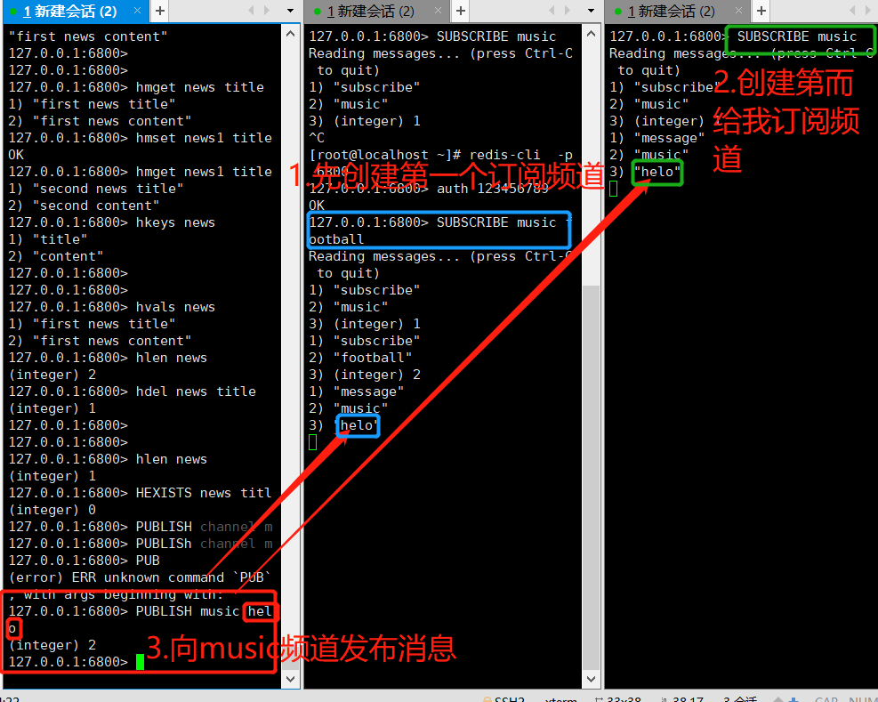
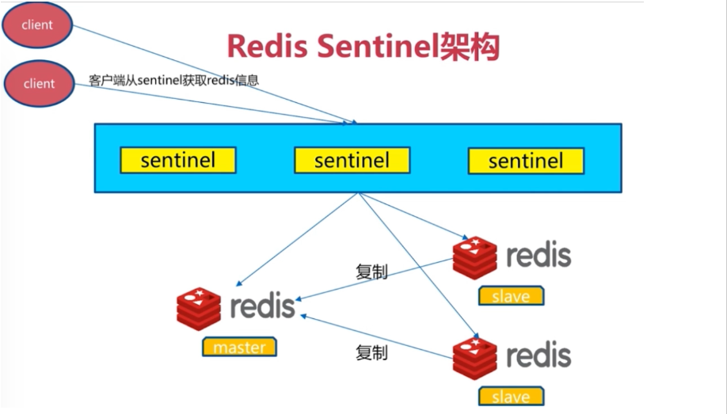
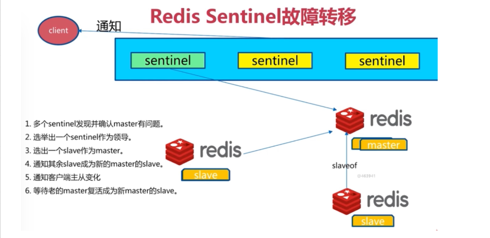
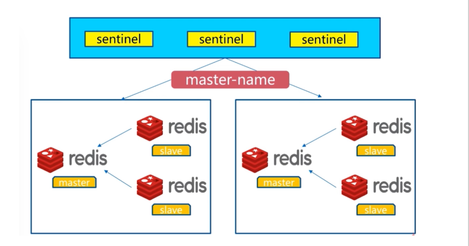
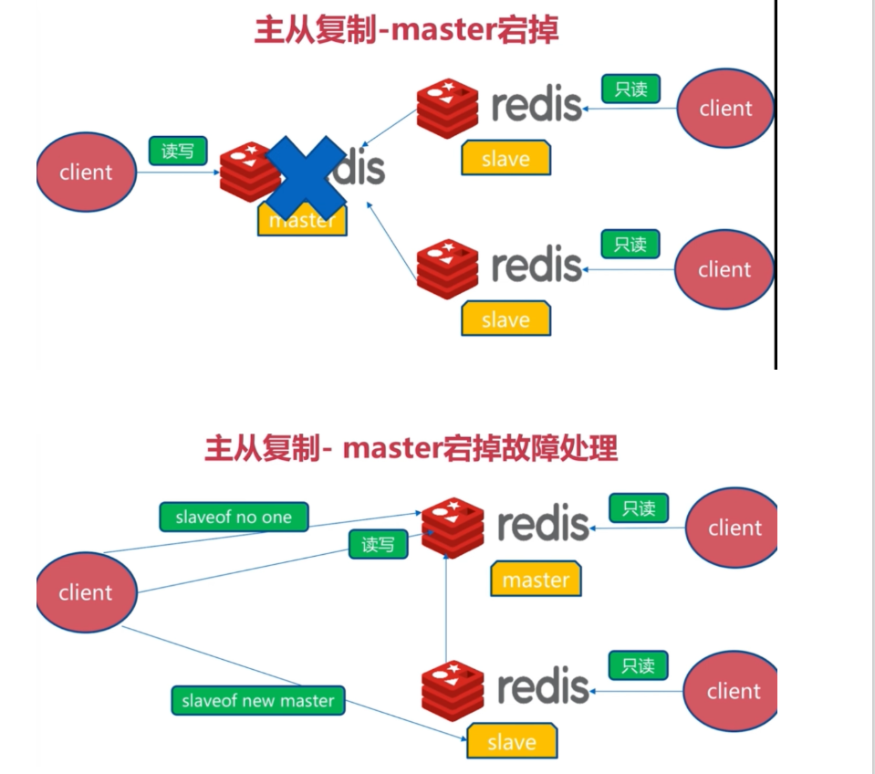

1.redis安装方式
yum安装（提前配置好yum源）
yum install redis -y #
源代码编译安装
rpm包手动安装
2.编译安装redis
创建一个文件夹,存redis(也可以不用创建)
mkdir linux_redis
cd linux_redis
1.在redis目录下,下载redis源代码包
wget http://download.redis.io/releases/redis-4.0.10.tar.gz
2.解压缩redis源码包
3.编译三部曲
指定安装路径 ，生成makefile 编译文件
./configure --prefix=redis的安装路径
开始编译
make
编译安装
make install
编译完成后，默认生成可使用的redis命令
/usr/local/bin/redis-server
4.修改redis的配置文件，支持更安全的启动方式
vim redis.conf
#打开redis密码的参数
requirepass 123456789
#开启安全模式
protected-mode yes
#修改redis的默认启动端口，以及绑定地址
bind 0.0.0.0
port 6800
#过滤出非空行，注释行的内容，重定向写入到一个文件中
grep -v "^$" redis.conf |grep -v "^#" > linuxredis.conf
#在配置文件结尾加上后台启动参数
daemonize yes
5.启动redis服务端
redis-server linuxredis.conf
6.验证redis是否启动
netstat -tunlp |grep redis
ps -ef|grep redis
7.指定密码登录redis
[root@localhost redis-5.0.7]# redis-cli -p 6800
127.0.0.1:6800> ping
(error) NOAUTH Authentication required
127.0.0.1:6800> auth 123456789
OK
127.0.0.1:6800> ping
PONG 字符串（strings）
哈希（hashes）
列表（lists）
集合（sets）
有序集合（sorted sets）keys * 查看所有key
type key 查看key类型
expire key seconds 过期时间
ttl key 查看key过期剩余时间 -2表示key已经不存在了
persist 取消key的过期时间 -1表示key存在，没有过期时间
exists key 判断key存在 存在返回1 否则0
del keys 删除key 可以删除多个
dbsize 计算key的数量set 设置key
get 获取key
append 追加string
mset 设置多个键值对
mget 获取多个键值对
del 删除key
incr 递增+1
decr 递减-1
127.0.0.1:6800> set name 'bajie' #设置key
127.0.0.1:6800> get name #获取key的值
"bajie"
127.0.0.1:6800> set name 'pig' #覆盖key
OK
127.0.0.1:6800> get name
"pig"
127.0.0.1:6800> APPEND name 'dsb' #追加key的string ,不区分大小写
(integer) 6
127.0.0.1:6800> get name
"pigdsb"
127.0.0.1:6800> mset name1 'monkey' name2 'tangseng' #设置多个键值对
OK
127.0.0.1:6800> keys *
1) "name2"
2) "name1"
3) "name"
127.0.0.1:6800> mget name name1 name2 #获取多个value
1) "pigdsb"
2) "monkey"
3) "tangseng"
127.0.0.1:6800> del name2 #删除key
(integer) 1 #删除一个不存在的key,结果为nil
127.0.0.1:6800> keys *
1) "name1"
2) "name"
127.0.0.1:6800> set num 10
OK
127.0.0.1:6800> get num
"10"
#string类型实际上不仅仅包括字符串类型，还包括整型，浮点型。redis可对整个字符串或字符串一部分进行操作，而对于整型/浮点型可进行自增、自减操作。
127.0.0.1:6379> incr num #给num string 加一 INCR 命令将字符串值解析成整型，将其加一，最后将结果保存为新的字符串值，可以用作计数器
(integer) 11
127.0.0.1:6800> get num
"11"
127.0.0.1:6800> decr num #递减1
(integer) 10
127.0.0.1:6800> decr num #递减1
(integer) 9
127.0.0.1:6800> get num
"9"
哈希结构就是 k1 -> k1 : v1 如同字典 套字典 { k1 : { k2: v2 } } ，取出v2 必须 k1，取出k2
hashes即哈希。哈希是从redis-2.0.0版本之后才有的数据结构。
hashes存的是字符串和字符串值之间的映射，比如一个用户要存储其全名、姓氏、年龄等等，就很适合使用哈希。
hset 设置散列值
hget 获取散列值
hmset 设置多对散列值
hmget 获取多对散列值
hsetnx 如果散列已经存在，则不设置（防止覆盖key）
hkeys 返回所有keys
hvals 返回所有values
hlen 返回散列包含域（field）的数量
hdel 删除散列指定的域（field）
hexists 判断是否存在127.0.0.1:6800> hset news title 'first news title'
(integer) 1
#设置第一条新闻 news的id为1，添加数据title的值是"first news title"
127.0.0.1:6800> hset news content 'first news content'
(integer) 1
#添加一个conntent内容
127.0.0.1:6800> hget news title #获取new的标题
"first news title"
127.0.0.1:6800> hget news content #获取new的内容
"first news content"
127.0.0.1:6800> hmget news title content #获取news的标题和内容
1) "first news title"
2) "first news content"
127.0.0.1:6800> hmset news1 title 'second news title' content 'second content'
OK
127.0.0.1:6800> hmget news1 title content
1) "second news title"
2) "second content"
#分别同时设置标题和内容并获取标题和内容
127.0.0.1:6800> hkeys news #获取news的key
1) "title"
2) "content"
127.0.0.1:6800> hvals news #获取news的值
1) "first news title"
2) "first news content"
127.0.0.1:6800> hlen news #获取news的长度
(integer) 2
127.0.0.1:6800> hdel news title #删除news的标题title
(integer) 1
127.0.0.1:6800> hlen news #检查一下长度
(integer) 1
127.0.0.1:6800> HEXISTS news title #判断news中是否有title，不存在返回0，存在返回1
(integer) 0
lpush 从列表左边插
rpush 从列表右边插
lrange 获取一定长度的元素 lrange key start stop
ltrim 截取一定长度列表
lpop 删除最左边一个元素
rpop 删除最右边一个元素
lpushx/rpushx key存在则添加值，不存在不处理
127.0.0.1:6800> lpush users 'bajie' 'monkey' 'tagnseng' #新建一个users，从左边放入三个元素
(integer) 3
127.0.0.1:6800> llen users #查看users长度
(integer) 3
127.0.0.1:6800> lrange users 0 -1 #查看users所有元素
1) "tagnseng"
2) "monkey"
3) "bajie"
127.0.0.1:6800> rpush users 'shasha' #从右边插入shasha
(integer) 4
127.0.0.1:6800> lrange users 0 -1 #查看users的所有元素
1) "tagnseng"
2) "monkey"
3) "bajie"
4) "shasha"
127.0.0.1:6800> lpop users #删除左边第一个元素
"tagnseng"
127.0.0.1:6800> lrange users 0 -1
1) "monkey"
2) "bajie"
3) "shasha"
127.0.0.1:6800> rpop users #删除右边第一个元素
"bajie"redis的集合，是一种无序的集合，集合中的元素没有先后顺序。
集合相关的操作也很丰富，如添加新元素、删除已有元素、取交集、取并集、取差集等。我们来看例子：
sadd/srem 添加/删除 元素
sismember 判断是否为set的一个元素
smembers 返回集合所有的成员
sdiff 返回一个集合和其他集合的差异
sinter 返回几个集合的交集
sunion 返回几个集合的并集127.0.0.1:6800> sadd class bajie monkey #添加集合，有三个元素，不加引号就当做字符串处理
(integer) 2
127.0.0.1:6800> SMEMBERS class #查看集合class成员
1) "monkey"
2) "bajie"
127.0.0.1:6800> srem class monkey #删除class的monkey
(integer) 1
127.0.0.1:6800> SMEMBERS class
1) "bajie"
127.0.0.1:6800> SISMEMBER class bajie
(integer) 1
127.0.0.1:6800> SISMEMBER class monkey
(integer) 0
127.0.0.1:6800>
#返回改是否是class的成员信息，不存在返回0，存在返回1
127.0.0.1:6800> sadd class monkey #再把monkey加入class
(integer) 1
127.0.0.1:6800> sadd class2 bajie shasha #添加新集合zoo2
(integer) 2
127.0.0.1:6800> SMEMBERS class2
1) "shasha"
2) "bajie"
127.0.0.1:6800> sdiff class class2 #找出集合class中有的，而class2中没有的元素
1) "monkey"
127.0.0.1:6800> sdiff class2 class #找出集合class2中有的，而class中没有的元素
1) "shasha"
127.0.0.1:6800> sinter class class2 #找出class和class2的交集，都有的元素
1) "bajie"
127.0.0.1:6800> SUNION class class2 #找出class和class2的并集，所有的不重复的元素
1) "shasha"
2) "bajie"
3) "monkey"
都是以z开头的命令
zset的每一个成员都有一个分数与之对应，并且分数是可以重复的。有序集合的增删改由于有啦排序，执行效率就是非常快速的，即便是访问集合中间的数据也是非常高效的。
用来保存需要排序的数据，例如排行榜，成绩，工资等。利用有序集合的排序，排序学生的成绩
127.0.0.1:6800> ZADD class_test 70 'bajie'
(integer) 1
127.0.0.1:6800> ZADD class_test 80 'monkey'
(integer) 1
127.0.0.1:6800> ZADD class_test 75 'shasha'
(integer) 1
127.0.0.1:6800> ZADD class_test 99 'tangseng'
(integer) 1排行榜，zreverange 倒叙 zrange正序
127.0.0.1:6800> ZREVRANGE class_test 0 -1 withscores
1) "tangseng"
2) "99"
3) "monkey"
4) "80"
5) "shasha"
6) "75"
7) "bajie"
8) "70"
127.0.0.1:6800> ZRANGE class_test 0 -1 withscores
1) "bajie"
2) "70"
3) "shasha"
4) "75"
5) "monkey"
6) "80"
7) "tangseng"
8) "99"
移除有序集合class_test中的成员，bajie给移除掉
127.0.0.1:6800> ZREM class_test bajie
(integer) 1
127.0.0.1:6800> ZRANGE class_test 0 -1 withscores
1) "shasha"
2) "75"
3) "monkey"
4) "80"
5) "tangseng"
6) "99"返回有序集合class_test的基数
127.0.0.1:6800> ZCARD class_test
(integer) 3返回成员的score值
127.0.0.1:6800> ZSCORE class_test monkey
"80"Redis 通过 PUBLISH 、 SUBSCRIBE 等命令实现了订阅与发布模式。
PUBLISH channel msg
将信息 message 发送到指定的频道 channel
SUBSCRIBE channel [channel ...]
订阅频道，可以同时订阅多个频道
UNSUBSCRIBE [channel ...]
取消订阅指定的频道, 如果不指定频道，则会取消订阅所有频道
PSUBSCRIBE pattern [pattern ...]
订阅一个或多个符合给定模式的频道，每个模式以 * 作为匹配符，比如 it* 匹配所 有以 it 开头的频道( it.news 、 it.blog 、 it.tweets 等等)， news.* 匹配所有 以 news. 开头的频道( news.it 、 news.global.today 等等)，诸如此类
PUNSUBSCRIBE [pattern [pattern ...]]
退订指定的规则, 如果没有参数则会退订所有规则
PUBSUB subcommand [argument [argument ...]]
查看订阅与发布系统状态
注意：使用发布订阅模式实现的消息队列，当有客户端订阅channel后只能收到后续发布到该频道的消息，之前发送的不会缓存，必须Provider和Consumer同时在线。
Redis是一种内存型数据库，一旦服务器进程退出，数据库的数据就会丢失，为了解决这个问题，Redis提供了两种持久化的方案，将内存中的数据保存到磁盘中，避免数据的丢失。
redis提供了RDB持久化的功能，这个功能可以将redis在内存中的的状态保存到硬盘中，它可以手动执行。
也可以再redis.conf中配置，定期执行。
RDB持久化产生的RDB文件是一个经过压缩的二进制文件，这个文件被保存在硬盘中，redis可以通过这个文件还原数据库当时的状态。
RDB(持久化)
内存数据保存到磁盘
在指定的时间间隔内生成数据集的时间点快照（point-in-time snapshot）
优点：速度快，适合做备份，主从复制就是基于RDB持久化功能实现
rdb通过再redis中使用save命令触发 rdb
rdb配置参数：
dir /data/6379/
dbfilename dbmp.rdb
每过900秒 有1个操作就进行持久化
save 900秒 1个修改类的操作
save 300秒 10个操作
save 60秒 10000个操作
save 900 1
save 300 10
save 60 10000
#redis持久化之rdb机制，创建rdb的配置文件
touch rdbredis.conf
#写入如下内容
daemonize yes #后台运行
port 6379 #指定端口
logfile /data/6379/redis.log #指定日志路径
dir /data/6379 #redis的数据文件，会存放在这里
dbfilename dbmp.rdb #开启rdb持久化，且指定持久化文件的名字
bind 0.0.0.0
save 900 1 #定义触发rdb持久化的时间机制
save 300 10
save 60 10000
#创建数据文件夹
mkdir -p /data/6379
# 创建数据
set name bajie
set name1 monkey
#手动保存
save
#指定rdb文件启动redis
redis-server rdbredis.conf
#在开另一个窗口:
cd /data/6379
ls
会存在.rdb文件
AOF（append-only log file）
记录服务器执行的所有变更操作命令（例如set del等），并在服务器启动时，通过重新执行这些命令来还原数据集
AOF 文件中的命令全部以redis协议的格式保存，新命令追加到文件末尾。
优点：最大程序保证数据不丢
缺点：日志记录非常大
#redis持久化之rdb机制，创建rdb的配置文件
touch rdbredis.conf
#写入如下内容
daemonize yes #后台运行
port 6379 #指定端口
logfile /data/6379/redis.log #指定日志路径
dir /data/6379 #redis的数据文件，会存放在这里
dbfilename dbmp.rdb # 开启rdb持久化，且指定持久化文件的名字
bind 0.0.0.0
save 900 1 #定义触发rdb持久化的时间机制
save 300 10
save 60 10000
#创建数据文件夹
mkdir -p /data/6379
# 创建数据
set name bajie
set name1 monkey
#保存
save
#指定rdb文件启动redis
redis-server rdbredis.conf
#在开另一个窗口:
cd /data/6379
ls
会存在.rdb文件
#redis持久化之aof方式，以日志形式，把修改类的操作，记录下来
修改配置文件如下
touch aof.conf
写入如下内容
daemonize yes
port 6379
logfile /data/6379/redis.log
dir /data/6379
appendonly yes #开启aof的俩参数
appendfsync everysec #aof的持久化机制
#指定aof文件启动redis
redis-server aof.conf
#在开另一个窗口:
cd /data/6379
ls
会存在成.aof文件
tail -f appendonly.aof #会夯住,监测状态
不重启，切换rdb持久化为aof持久化
1.准备一个rdb的redis数据库
2.通过命令，直接切换aof
127.0.0.1:6379> CONFIG set appendonly yes #开启AOF功能
OK
127.0.0.1:6379> CONFIG SET save "" #关闭RDB功能
OK
3.正确情况下，会生成aof日志文件了，此时命令操作都是在aof里面了
4.还得修改配置文件，以上命令只是临时生效，改完以后，下次指定配置文件启动，就一直是aof了
port 6379
logfile /data/6379/redis.log
dir /data/6379
dbfilename dbmp.rdb
save 900 1
save 300 10
save 60 10000
daemonize yes
appendonly yes
appendfsync everysec
redis集群中的数据库复制是通过主从同步来实现的
主节点(master)把数据分发给从节点(slave)
主从同步的好处自安于高可用,redis节点有冗余设计
原理：
1. 从服务器向主服务器发送 SYNC 命令。
2. 接到 SYNC 命令的主服务器会调用BGSAVE 命令，创建一个 RDB 文件，并使用缓冲区记录接下来执行的所有写命令。
3. 当主服务器执行完 BGSAVE 命令时，它会向从服务器发送 RDB 文件，而从服务器则会接收并载入这个文件。
4. 主服务器将缓冲区储存的所有写命令发送给从服务器执行。
1、在开启主从复制的时候，使用的是RDB方式的，同步主从数据的
2、同步开始之后，通过主库命令传播的方式，主动的复制方式实现
3、2.8以后实现PSYNC的机制，实现断线重连
#redis的主从复制，做一个一主三从的实验(手动切换主从)
mredis.conf #主库的配置文件
port 6380
daemonize yes
pidfile /data/6380/redis.pid
loglevel notice
logfile "/data/6380/redis.log"
dbfilename dump.rdb
dir /data/6380
protected-mode no
准备一个从库s1redis.conf
port 6381
daemonize yes
pidfile /data/6381/redis.pid
loglevel notice
logfile "/data/6381/redis.log"
dbfilename dump.rdb
dir /data/6381
protected-mode no
slaveof 127.0.0.1 6380 #也可以在配置文件中，直接定义，直接启动，默认就是主从复制了
准备第二个从库s2redis.conf
port 6382
daemonize yes
pidfile /data/6382/redis.pid
loglevel notice
logfile "/data/6382/redis.log"
dbfilename dump.rdb
dir /data/6382
protected-mode no
slaveof 127.0.0.1 6380 #也可以在配置文件中，直接定义，直接启动，默认就是主从复制了
#创建三个数据库的数据文件夹
mkdir -p /data/{6380,6381,6382}
#分别启动三个数据库实例
[root@s24_linux myredis]# redis-server mredis.conf
[root@s24_linux myredis]# redis-server s1redis.conf
[root@s24_linux myredis]# redis-server s2redis.conf
[root@s24_linux myredis]# ps -ef|grep redis
root 78545 1 0 10:54 ? 00:00:00 redis-server *:6380
root 78550 1 0 10:54 ? 00:00:00 redis-server *:6381
root 78555 1 0 10:54 ? 00:00:00 redis-server *:6382
#分别查看三个redis数据库的库信息
[root@s24_linux myredis]# redis-cli -p 6380 info replication
[root@s24_linux myredis]# redis-cli -p 6381 info replication
[root@s24_linux myredis]# redis-cli -p 6382 info replication
#通过命令，临时给三个数据库添加主从复制信息,如果在配置文件中设置成默认的主从关系,就不用写下面的内容
redis-cli -p 6381 slaveof 127.0.0.1 6380 #6380设置为主库,给6381指定为6380的从库
redis-cli -p 6381 info replication #查看6381的复制信息
redis-cli -p 6380 info replication #查看6380的复制信息
redis-cli -p 6382 slaveof 127.0.0.1 6380 #给6382设置为6380的从库
redis-cli -p 6380 info replication
结果:
[root@localhost linux_redis]# redis-cli -p 6380 info replication
# Replication
role:master
connected_slaves:2
slave0:ip=127.0.0.1,port=6381,state=online,offset=84,lag=1 #从s1redis
slave1:ip=127.0.0.1,port=6382,state=online,offset=84,lag=0 #从s2redis
#进行主从复制读写演示
6380可读可写
6381 6382只读，不给写
#杀死从库，无所谓，再把从库重新启动，或者再创建一个新的就行
#杀死主库，必须得手动解决故障，吧从库切换为新的主库，继续主从复制
只需要剔除当前自己的从的身份即可，剔除6381的从的身份
127.0.0.1:6381> slaveof no one
OK
#再次启动一个新的从库，以6381为主库即可
Redis-Sentinel是redis官方推荐的高可用性解决方案，
当用redis作master-slave的高可用时，如果master本身宕机，redis本身或者客户端都没有实现主从切换的功能。
而redis-sentinel就是一个独立运行的进程，用于监控多个master-slave集群，
自动发现master宕机，进行自动切换slave > master。
+ 不时的监控redis是否良好运行，如果节点不可达就会对节点进行下线标识
+ 如果被标识的是主节点，sentinel就会和其他的sentinel节点“协商”，如果其他节点也人为主节点不可达，就会选举一个sentinel节点来完成自动故障转义
+ 在master-slave进行切换后，master_redis.conf、slave_redis.conf和sentinel.conf的内容都会发生改变，即master_redis.conf中会多一行slaveof的配置，sentinel.conf的监控目标会随之调换
每个Sentinel以每秒钟一次的频率向它所知的Master，Slave以及其他 Sentinel 实例发送一个 PING 命令
如果一个实例（instance）距离最后一次有效回复 PING 命令的时间超过 down-after-milliseconds 选项所指定的值， 则这个实例会被 Sentinel 标记为主观下线。
如果一个Master被标记为主观下线，则正在监视这个Master的所有 Sentinel 要以每秒一次的频率确认Master的确进入了主观下线状态。
当有足够数量的 Sentinel（大于等于配置文件指定的值）在指定的时间范围内确认Master的确进入了主观下线状态， 则Master会被标记为客观下线
在一般情况下， 每个 Sentinel 会以每 10 秒一次的频率向它已知的所有Master，Slave发送 INFO 命令
当Master被 Sentinel 标记为客观下线时，Sentinel 向下线的 Master 的所有 Slave 发送 INFO 命令的频率会从 10 秒一次改为每秒一次
若没有足够数量的 Sentinel 同意 Master 已经下线， Master 的客观下线状态就会被移除。
若 Master 重新向 Sentinel 的 PING 命令返回有效回复， Master 的主观下线状态就会被移除。
主观下线和客观下线
主观下线：Subjectively Down，简称 SDOWN，指的是当前 Sentinel 实例对某个redis服务器做出的下线判断。
客观下线：Objectively Down， 简称 ODOWN，指的是多个 Sentinel 实例在对Master Server做出 SDOWN 判断，并且通过 SENTINEL is-master-down-by-addr 命令互相交流之后，得出的Master Server下线判断，然后开启failover.
SDOWN适合于Master和Slave，只要一个 Sentinel 发现Master进入了ODOWN， 这个 Sentinel 就可能会被其他 Sentinel 推选出， 并对下线的主服务器执行自动故障迁移操作。
ODOWN只适用于Master，对于Slave的 Redis 实例，Sentinel 在将它们判断为下线前不需要进行协商， 所以Slave的 Sentinel 永远不会达到ODOWN。



#redis的哨兵配置，能够自动的解决主从切换故障
1.准备三个redis数据库实例，配置好，主从关系
[root@localhost linux_redis]# cat mredis.conf
port 6380
daemonize yes
pidfile /data/6380/redis.pid
loglevel notice
logfile "/data/6380/redis.log"
dbfilename dump.rdb
dir /data/6380
protected-mode no
[root@localhost linux_redis]# cat s1redis.conf
port 6381
daemonize yes
pidfile /data/6381/redis.pid
loglevel notice
logfile "/data/6381/redis.log"
dbfilename dump.rdb
dir /data/6381
protected-mode no
slaveof 127.0.0.1 6380
[root@localhost linux_redis]# cat s2redis.conf
port 6382
daemonize yes
pidfile /data/6382/redis.pid
loglevel notice
logfile "/data/6382/redis.log"
dbfilename dump.rdb
dir /data/6382
protected-mode no
slaveof 127.0.0.1 6380
#分别启动三个redis数据库节点
redis-sentinel shaobing.conf
redis-sentinel shaobing1.conf
redis-sentinel shaobing2.conf
2.准备三个哨兵sentinel(哨兵)的配置文件，三个哨兵配置文件，仅仅是端口的不同，默认是26379,26380,26381
s24shaobing.conf
port 26379
dir /var/redis/data/
logfile "26379.log"
#当前Sentinel节点监控 192.168.119.10:6379 这个主节点
#2代表判断主节点失败至少需要2个Sentinel节点节点同意
#mymaster是主节点的别名
sentinel monitor s24ms 127.0.0.1 6380 2
#每个Sentinel节点都要定期PING命令来判断Redis数据节点和其余Sentinel节点是否可达，如果超过30000毫秒30s且没有回复，则判定不可达
sentinel down-after-milliseconds s24ms 30000
#当Sentinel节点集合对主节点故障判定达成一致时，Sentinel领导者节点会做故障转移操作，选出新的主节点，
#原来的从节点会向新的主节点发起复制操作，限制每次向新的主节点发起复制操作的从节点个数为1
sentinel parallel-syncs s24ms 1
#故障转移超时时间为180000毫秒
sentinel failover-timeout s24ms 180000
#后台运行哨兵
daemonize yes
s24shaobing1.conf
s24shaobing2.conf
#快速生成2个配置文件
[root@localhost linux_redis]# sed 's/26379/26380/g' s24shaobing.conf > s24shaobing1.conf
[root@localhost linux_redis]# sed 's/26379/26381/g' s24shaobing.conf > s24shaobing2.conf
#创建数据文件夹
mkdir -p /var/redis/data/
3.分别启动三个哨兵并检查进程是否启动
[root@localhost linux_redis]# redis-sentinel shaobing.conf
[root@localhost linux_redis]# redis-sentinel shaobing1.conf
[root@localhost linux_redis]# redis-sentinel shaobing2.conf
[root@localhost linux_redis]# ps -ef|grep redis
root 78952 1 0 11:42 ? 00:00:00 redis-server *:6380
root 78957 1 0 11:42 ? 00:00:00 redis-server *:6381
root 78963 1 0 11:42 ? 00:00:00 redis-server *:6382
root 79051 1 0 11:51 ? 00:00:00 redis-sentinel *:26379 [sentinel]
root 79056 1 0 11:51 ? 00:00:00 redis-sentinel *:26380 [sentinel]
root 79061 1 0 11:51 ? 00:00:00 redis-sentinel *:26381 [sentinel]
4.干掉master主库，哨兵会自动的选举一个从库为新的主库
kill -9 78952
5.将挂掉的主库，重新启动，查看复制信息
[root@localhost linux_redis]# redis-cli -p 6382 info replication
# Replication
role:master #已经变为master
connected_slaves:1
slave0:ip=127.0.0.1,port=6381,state=online,offset=54714,lag=1
master_replid:b7cdc9508bb529976720a385bafd804ffb35a2ab
master_replid2:8c144e2f317052c195eefa4e56d67a3ab8848c9d
master_repl_offset:54844
second_repl_offset:48410
repl_backlog_active:1
repl_backlog_size:1048576
repl_backlog_first_byte_offset:71
repl_backlog_histlen:54774
#在过程中间只是更改了主的配置文件
查看主的配置文件
port 26379
dir "/var/redis/data"
logfile "26379.log"
sentinel myid 690257e82c765fe396a45bf9caee7e0a93b86db2
sentinel deny-scripts-reconfig yes
sentinel monitor s24ms 127.0.0.1 6382 2
sentinel config-epoch s24ms 1
daemonize yes
# Generated by CONFIG REWRITE
protected-mode no
sentinel leader-epoch s24ms 1
sentinel known-replica s24ms 127.0.0.1 6380
sentinel known-replica s24ms 127.0.0.1 6381
sentinel known-sentinel s24ms 127.0.0.1 26380 af8573b42730ed3bd6fc07a3af465c40ceddf340
sentinel known-sentinel s24ms 127.0.0.1 26381 f8e9d772a588472f76778c0352d5e9405cc397f3
sentinel current-epoch 1
redis官方生成可以达到 10万/每秒,每秒执行10万条命令
假如业务需要每秒100万的命令执行呢？
应该是考虑分布式，加机器，把数据分到不同的位置，分摊集中式的压力，一堆机器做一件事
redis实例集群主要思想是将redis数据的key进行散列，通过hash函数特定的key会映射到指定的redis节点上
分布式数据库首要解决把整个数据集按照分区规则映射到多个节点的问题，即把数据集划分到多个节点上，每个节点负责整个数据的一个子集。
常见的分区规则有哈希分区和顺序分区。Redis Cluster采用哈希分区规则，因此接下来会讨论哈希分区规则。
节点取余分区
一致性哈希分区
虚拟槽分区(redis-cluster采用的方式)

大概步骤:
搭建集群分为几部
准备节点
节点通信
分配槽位给节点
1.准备6个数据库节点，搭建三主三从的数据库主从机群，6个节点，仅仅是端口的不同
指定7000~7005 6个节点
touch redis-7000.conf
vim redis-7000.conf
port 7000
daemonize yes
dir "/opt/redis/data"
logfile "7000.log"
dbfilename "dump-7000.rdb"
cluster-enabled yes #开启集群模式
cluster-config-file nodes-7000.conf #集群内部的配置文件
touch redis-7001.conf
touch redis-7002.conf
touch redis-7003.conf
touch redis-7004.conf
touch redis-7005.conf
#每个节点写入7000端口的编辑内容,注意端口不一样
sed 's/7000/7001/g' redis-7000.conf > redis-7001.conf
sed 's/7000/7002/g' redis-7000.conf > redis-7002.conf
sed 's/7000/7003/g' redis-7000.conf > redis-7003.conf
sed 's/7000/7004/g' redis-7000.conf > redis-7004.conf
sed 's/7000/7005/g' redis-7000.conf > redis-7005.conf
创建数据文件夹
分别启动6个redis节点
redis-server redis-7000.conf
redis-server redis-7001.conf
redis-server redis-7002.conf
redis-server redis-7003.conf
redis-server redis-7004.conf
redis-server redis-7005.conf
检查状态:
[root@localhost clusterredis]# ps -ef|grep redis
root 7138 1 0 01:01 ? 00:00:10 redis-server 0.0.0.0:6800
root 7286 1 0 02:13 ? 00:00:06 redis-server *:6381
root 7494 1 0 03:21 ? 00:00:03 redis-server *:6382
root 7532 1 0 03:35 ? 00:00:04 redis-sentinel *:26379 [sentinel]
root 7537 1 0 03:35 ? 00:00:04 redis-sentinel *:26380 [sentinel]
root 7542 1 0 03:35 ? 00:00:04 redis-sentinel *:26381 [sentinel]
root 7634 1 0 04:04 ? 00:00:00 redis-server *:7000 [cluster]
root 7639 1 0 04:05 ? 00:00:00 redis-server *:7001 [cluster]
root 7644 1 0 04:05 ? 00:00:00 redis-server *:7002 [cluster]
root 7649 1 0 04:05 ? 00:00:00 redis-server *:7003 [cluster]
root 7686 1 0 04:07 ? 00:00:00 redis-server *:7004 [cluster]
root 7691 1 0 04:07 ? 00:00:00 redis-server *:7005 [cluster]
2.配置ruby环境，一键创建redis机群slot槽位分配
yum直接安装ruby解释器
yum install ruby -y
下载ruby操作redis的模块
wget http://rubygems.org/downloads/redis-3.3.0.gem
gem install -l redis-3.3.0.gem
一键开启redis集群槽位分配，先找一下这个ruby工具在哪
find / -name redis-trib.rb
#创建槽位:
/linux_redis/redis-5.0.7/src/redis-trib.rb create --replicas 1 127.0.0.1:7000 127.0.0.1:7001 127.0.0.1:7002 127.0.0.1:7003 127.0.0.1:7004 127.0.0.1:7005
这个执行不了用:redis-cli --cluster create 127.0.0.1:7000 127.0.0.1:7001 127.0.0.1:7002 127.0.0.1:7003 127.0.0.1:7004 127.0.0.1:7005 --cluster-replicas 1
会创建六个槽位:三主三从:
M: 181c47f790297d5f49058bcaa8886c06df43b172 127.0.0.1:7000
slots:[0-5460] (5461 slots) master
M: c347896134bcc4fbc5061e82157c58a5835be3bd 127.0.0.1:7001
slots:[5461-10922] (5462 slots) master
M: 6dacb795eec38a3f0eb310ea43593d79a2884632 127.0.0.1:7002
slots:[10923-16383] (5461 slots) master
S: 326a871d0cb797b3f4f5c8660e027bf54605873e 127.0.0.1:7003
replicates c347896134bcc4fbc5061e82157c58a5835be3bd
S: 084b2cebed67291e98d54f61619aa3efbb93b3c7 127.0.0.1:7004
replicates 6dacb795eec38a3f0eb310ea43593d79a2884632
S: 1808e48c98f420164adc17ca476820778ba8f54f 127.0.0.1:7005
replicates 181c47f790297d5f49058bcaa8886c06df43b172
Can I set the above configuration? (type 'yes' to accept): yes
3.开启redis集群功能，向集群中写入数据，查看数据重定向
以集群模式登陆redis-cluster ，写入数据
[root@localhost clusterredis]# redis-cli -p 7000 -c #登录7000端口
127.0.0.1:7000> set name cluster #创建数据
-> Redirected to slot [5798] located at 127.0.0.1:7001 #重定向到7001端口
OK
退出当前端口,再次登录
127.0.0.1:7000> get name
-> Redirected to slot [5798] located at 127.0.0.1:7001
"cluster" #可以查到内容